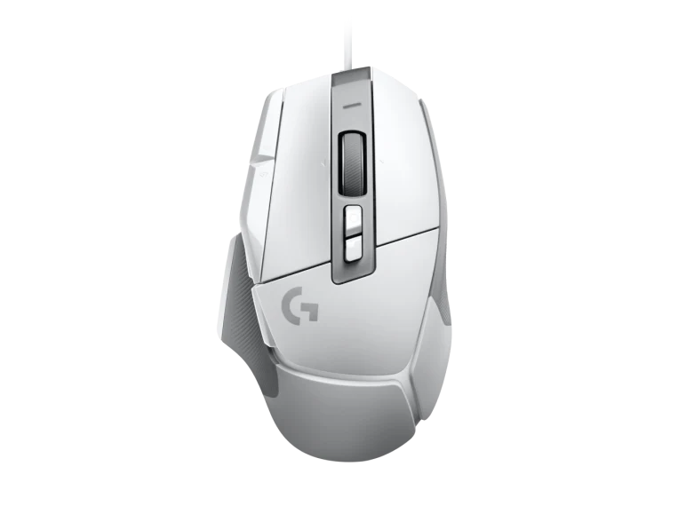
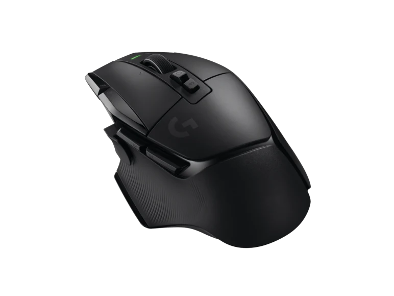

High Performance Gaming Mouse
Engineered for advanced gaming performance. G502 HERO features HERO 25K gaming sensor with sub-micron precision tracking, customizable LIGHTSYNC RGB, onboard profiles, repositionable weights and more.
BrandLogitech
Product Code: Logitech G502
Availability: In Stock
Viewed: 12235 times
High Performance Gaming Mouse
G502 X is the latest addition to the legendary G502 lineage. Redesigned to achieve an impressive weight reduction down to 89 grams. Featuring our first-ever LIGHTFORCE hybrid optical-mechanical switches and HERO 25K sub-micron sensor.
BrandLogitech
Product Code: G502 X Wired Gaming Mouse (White)
Availability: In Stock
Viewed: 596 times
High Performance Gaming Mouse
G502 X LIGHTSPEED is the latest addition to legendary G502 lineage. Featuring our first-ever LIGHTFORCE hybrid optical-mechanical switches and updated LIGHTSPEED wireless protocol with 68% faster response rate than the previous generation.
BrandLogitech
Product Code: G502 x Lightspeed wireless gaming mouse
Availability: In Stock
Viewed: 15500 times